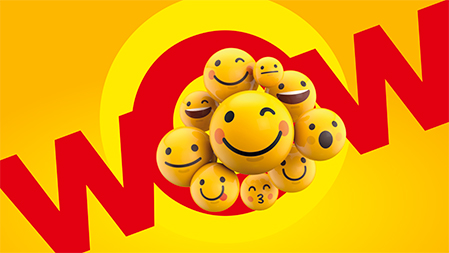
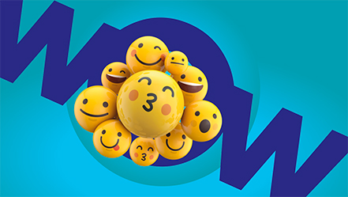
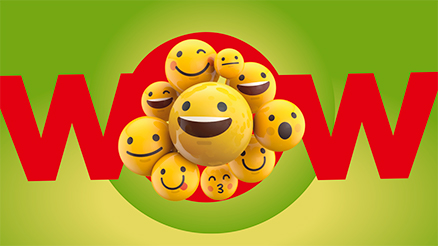

Показать активности
Главная
Тёплый
таймер
Рецепты
теплоты
Тёплые
фотографии
Детский
словарь
Теплые
заставки
100 способов
сказать "Спасибо"
Видео-
благодарности
Электронная
открытка
Online-
предсказания
Weeks of warmth
Недели теплоты

Выбрать

Выбрать

Выбрать
weeks of warmth
Недели теплоты
Введите текст
Введите e-mail Коллеги
Отправить открытку
weeks of warmth
Недели теплоты
Спасибо!
Ваша открытка отправлена
Коллеге на почту!
Хорошо